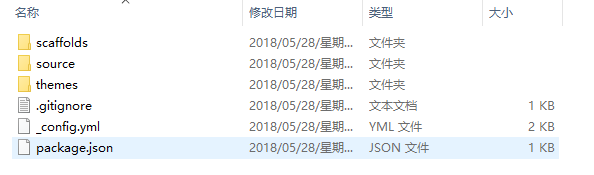
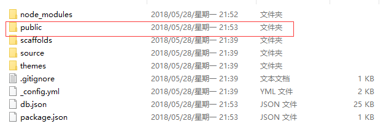
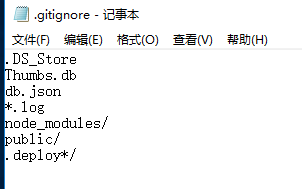

前言
阅读此文前，假定你已经了解如何基于GitHub Pages + Hexo来搭建个人博客。如果不了解的，可参考如下教程或教程(就不重复造轮子了)；为自己的博客添加主题，其实也很简单：只需要在Hexo中挑选出自己心仪的风格，并将对应的源码从GitHub上clone到本地，并存放在你本地博客目录的themes路径下，并修改博客根目录的_config.yml文件，将theme: landscape中的landscape替换为你clone下来的文件夹名即可。具体操作参考教程。
接下来进入正题：搭建过个人博客的都清楚，Hexo是通过Node.js将本地的md文件(即就是你的博客源文件)基于指定的主题渲染成静态页面，在本地生成public文件夹，然后通过部署将public文件夹同步到GitHub上，这样你就可以通过username.github.io来访问。那么问题来了，当你如果换了台电脑或者想在其他机器上修改你的博客或者写一篇新博客，这就没招了。因为通过Hexo发布到GitHub上的是经过Node.js渲染过后的HTML文件，而非原始的md文件；所有你clone下GitHub上的源码也没什么用，除非你可以接受直接基于HTML写文档，那在这里我给你一个大写的服字。
Hexo的安装过程
首先，通过npm install hexo -g在本地安装hexo(保证电脑上已经安装了git和node.js)
然后，在指定路径下执行hexo init命令来初始化hexo环境的相关文件，结果如下图所示：

初始化出来的文件均为hexo环境配置
其次，通过npm install命令安装相关依赖，再通过hexo g来实现文档渲染，最后通过hexo s开始本地服务，如果报端口占用，可通过hexo s -p 5000重定向端口号，就可以通过localhost:5000来实现本地模式查看。当通过hexo g渲染文档后，会发现在博客根目录下新建了一个public目录，如下图所示：

public目录就是最终发布到GitHub上的目录，node_module目录是执行完npm install后安装在本地的相关依赖，不用care它。
在理解了hexo的目录结构以后不难看出，其实博客网站只关注public目录；而hexo的环境信息(所使用的主题、所有博客的原md格式的文档、博客的配置信息)都是在scaffolds，source，themes和_config.yml中，所以只需要将这些文件维护到GitHub上，就可以随时随地在任何地方down下自己的环境文件，从而就可以开始你的创作了。
实现方案
在username.github.io仓库中新建一个hexo分支，用master分支来存放hexo发布的静态网页信息(即就是public目录下的内容)，用hexo分支来存放你的博客环境信息。其实当你执行完hexo init初始化命令后，你会发现hexo会默认帮你生成一个.gitignore文件，内容如下所示：

这里面已经自动帮你剔除了所有和hexo环境信息无关的目录了，所有你不做主动做任何过滤，直接在本地新建一个hexo分支，并将环境信息提交到GitHub对应的hexo分支即可。在博客根目录的_config.yml中指定deploy的branch为master分支即可。
本地自测
在本机新建一个文件夹，将username.github.io仓库的hexo分支clone到本地，然后执行npm install命令来安装所需要的相关相关依赖。切结不要执行hexo init命令 ，因为该命令会初始化本地hexo环境，会用默认的hexo配置和主题来覆盖你自己的设置；因为我们hexo分支上的源码已经是自己当初所配置的环境，所以没必要初始化，只需要安装相关依赖，然后渲染自己的博客源文件hexo g,并在本地新开一个端口做测试hexo s -p 5000, 你会发现本地展示效果和通过username.github.io一致。至此已搞定全部问题。
需要注意的是，我这里是在本地做的测试。如果换台机器，保证已安装有git和node.js的前提下，按照上述再操作一遍即可。


 首頁
歸檔
標籤
關於
搜索
首頁
歸檔
標籤
關於
搜索